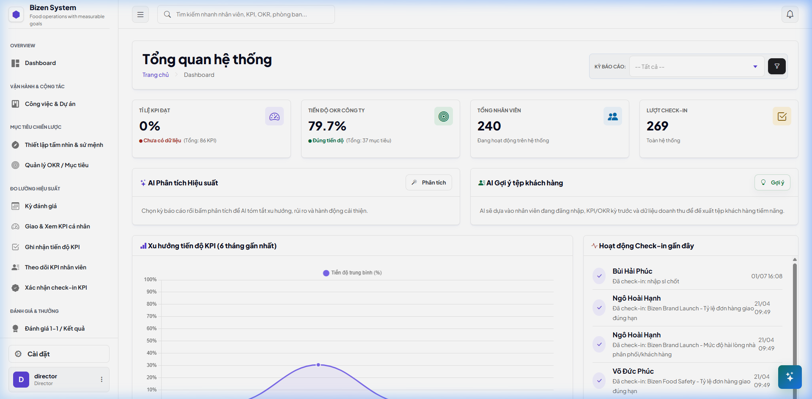
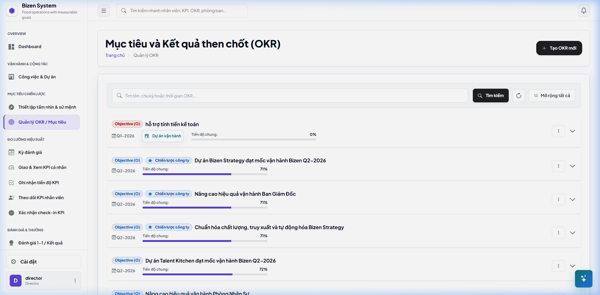
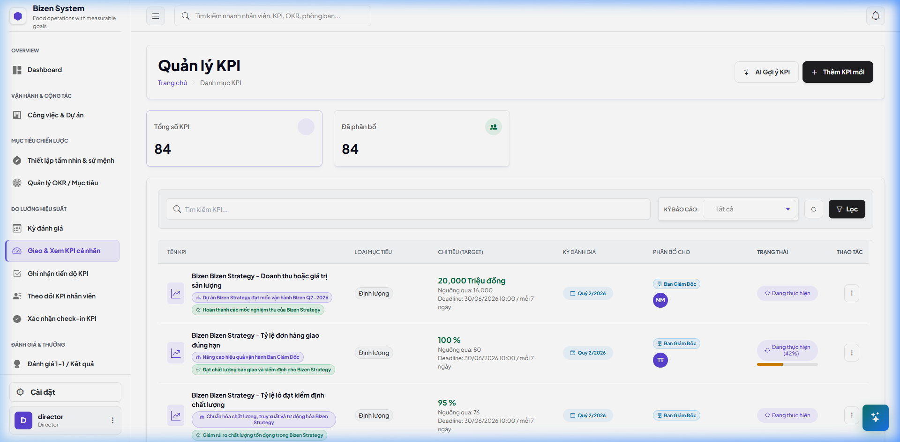
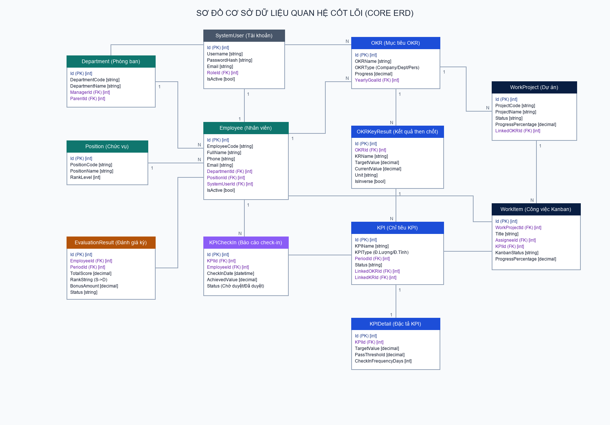
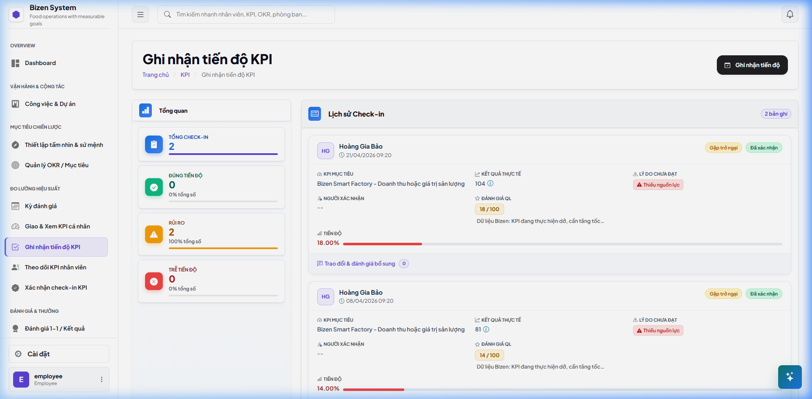
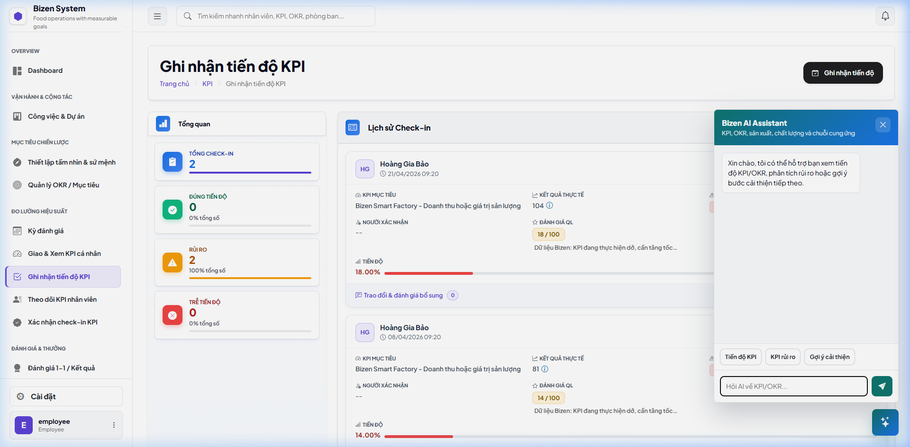

Báo cáo dự án tốt nghiệp
Báo cáo dự án tốt nghiệp
HỆ THỐNG HỖ TRỢ VẬN HÀNH THÔNG MINH CHO DOANH NGHIỆP VỪA VÀ NHỎ HỖ TRỢ QUẢN LÝ ĐA CẤP VÀ ĐƯA RA QUYẾT ĐỊNH BẰNG AI
Đội ngũ phát triển nhóm NEXTGEN

A.Quân
Leader, AIQuản trị tiến độ, tích hợp Gemini API.
A.Như
FE KPI OKRXây dựng UI mục tiêu & Dashboard.
An An
BE KPI OKRThiết kế Schema CSDL & API Core.
H.Nhật
FE Vận hành & KanbanGiao diện Check-in, 1-on-1, Board Kanban.
T.Bảo
BE Vận hành & KanbanDuyệt check-in, tính thưởng, API Kanban.
T.Phong
FS Nền tảng & Hệ thốngXây dựng Auth, Google OAuth, SaaS, Mail.
Q.Khánh
TesterQA/Tester viết kịch bản & test lỗi.
Bối cảnh và Hiện trạng doanh nghiệp
-
Điểm nghẽn quản trị hiệu suất truyền thống
Hầu hết các SME quản lý KPI bằng Excel rải rác, gây trễ nải báo cáo, sai lệch số liệu và thiếu đi tính kết nối chiến lược (OKR).
-
Thiếu tính chủ động và dự báo
Quản lý chỉ nhận thấy kết quả vào cuối kỳ đánh giá, không có khả năng cảnh báo sớm rủi ro hoặc tư vấn tức thời khi chỉ tiêu bị chậm tiến độ.
-
Nhu cầu tích hợp Trí tuệ nhân tạo (AI)
Thay đổi từ quản trị bị động sang chủ động bằng cách sử dụng LLM (Gemini API) hỗ trợ gợi ý KPI và phân tích hiệu suất thời gian thực.

Mục tiêu và Phạm vi dự án
-
Mục tiêu tổng quát
Xây dựng hệ thống SaaS Bizen KPI/OKR giúp doanh nghiệp SME quản lý mục tiêu liên cấp và ứng dụng AI Gemini đưa ra các đề xuất giải pháp thông minh.
-
Phạm vi phía quản trị (Director / Manager)
Thiết lập chiến lược OKR 3 cấp, giao KPI, duyệt tiến độ check-in, quản lý dự án Kanban, chấm điểm rank thưởng và chạy phân tích AI.
-
Phạm vi phía nhân viên (Employee)
Xem danh sách KPI cá nhân, check-in tiến độ kèm giải trình rào cản, kéo thả thẻ việc Kanban, và chat với Trợ lý AI tư vấn.

Giao diện thiết lập chiến lược OKR & KPI
-
Interactive OKR Tree View
Sơ đồ cây phân rã mục tiêu trực quan từ Công ty xuống Phòng ban/Cá nhân, hỗ trợ tương tác thu gọn, mở rộng và cập nhật tiến độ theo thời gian thực.
-
Visual Dashboard & Progress UX
Bảng điều khiển trực quan hóa chỉ số với các biểu đồ tròn (Progress Rings), đường xu hướng, giúp Giám đốc theo dõi nhanh sức khỏe doanh nghiệp.
-
Client-side Form Validation
Form giao KPI thông minh tích hợp tính toán trọng số tự động và cảnh báo tức thì ngay trên trình duyệt khi tổng trọng số vượt quá 100%.

Kiến trúc CSDL & Đồng bộ tiến độ OKR/KPI
-
Cơ chế tính toán tiến độ tự động (Progress Roll-up)
Khi một check-in KPI được duyệt $\rightarrow$ Cập nhật tiến độ KPI $\rightarrow$ Đồng bộ tiến độ Key Result liên quan $\rightarrow$ Cập nhật phần trăm hoàn thành của Objective cha tương ứng.
-
Đặc tả CSDL quan hệ chính
Tối ưu hóa chỉ mục (Indexes) trên các khóa ngoại `CompanyOKRs.ParentId`, `KeyResults.OKRId`, và `KPIs.KeyResultId` tăng tốc độ Roll-up dưới 10ms.

Giao diện Vận hành & Bảng công việc Kanban
-
Drag-and-Drop Kanban Board UI
Bảng công việc dạng Kanban kéo thả thẻ việc (Work Items) mượt mà, phân rã tiến độ rõ ràng theo trạng thái và trực quan hóa đóng góp cho KPI.
-
Optimized Check-in User Journey
Hành trình Check-in tiến độ 3 bước tối giản: Cập nhật kết quả đạt được -> Nhận diện rào cản -> Đề xuất phương án hành động khắc phục.
-
Split-Screen 1-on-1 Workspace
Giao diện họp 1-on-1 thông minh chia đôi màn hình: Tích hợp lịch sử phản hồi tiến độ và trình soạn thảo biên bản cuộc họp cộng tác tức thời.

Logic Vận hành, Kanban & Tính Lương Thưởng
-
Quy trình Phê duyệt Check-in an toàn
Backend sử dụng Database Transaction khóa các hàng liên quan khi duyệt tiến độ, ngăn chặn xung đột ghi đồng thời (Race Conditions).
-
Hệ thống tự động tính thưởng HR
Khi hết kỳ đánh giá, backend tự động quét điểm hoàn thành KPI trung bình để xếp hạng Rank (S, A, B, C, D) và tính thưởng dựa trên `BonusRules` cấu hình.
-
Nghiệp vụ Kanban & Phân rã Task công việc
Các RESTful API cập nhật trạng thái thẻ việc và liên kết tự động ghi nhận tiến độ đóng góp cho chỉ tiêu KPI liên quan.
Trợ lý AI Gemini & Phân hệ Nền tảng Hệ thống
-
Trợ lý tư vấn AI Gemini tự động hóa
Tích hợp API Gemini (mô hình `gemini-2.5-flash`) tự động phân tích dữ liệu hiệu suất của phòng ban để đưa ra đề xuất cải tiến.
-
Các chức năng Nền tảng & Hệ thống
Xây dựng cơ chế đăng nhập Google OAuth, phân quyền người dùng (Roles & Claims), quản lý đa doanh nghiệp (SaaS Tenants) và Nhật ký Audit log.

Kế hoạch kiểm thử & Phương pháp thực hiện
-
Phương pháp Kiểm thử Hộp đen (Black-Box)
Tập trung kiểm thử chức năng giao diện người dùng, hành động bấm nút, kéo thả Kanban, và nhập liệu form check-in tiến độ.
-
Kiểm thử Phân quyền (Access Scope)
Xác thực cơ chế bảo mật dữ liệu, đảm bảo nhân viên không thể chỉnh sửa hoặc xem trộm chỉ tiêu KPI của đồng nghiệp hoặc phòng ban khác.
-
Kiểm thử Hiệu năng & Cache RAM
Đánh giá thời gian tải trang khi cache Claims phân quyền trong IMemoryCache, đảm bảo tốc độ phản hồi REST API dưới 200ms.
-
Kiểm thử Đa nền tảng (Cross-Device)
Thực thi các kịch bản trên các trình duyệt phổ biến (Chrome, Edge, Safari) và các thiết bị di động thực tế để tối ưu hiển thị.
Video Demo: Hệ thống vận hành thông minh tích hợp quyết định bằng AI
Tổng kết và Định hướng tương lai
-
Kết quả đạt được
Giải quyết triệt để bài toán quản lý hiệu suất OKR/KPI liên thông công việc Kanban, tích hợp thành công AI Gemini tư vấn & gợi ý chỉ tiêu thông minh.
-
Bài học kinh nghiệm
Mô hình kiến trúc phân tầng Layered giúp phát triển dự án song song hiệu quả; tối ưu Claims cache (RAM) tăng tốc độ tải trang web 90%.
-
Định hướng phát triển
Phát triển Mobile App native (iOS/Android), Tự động hóa kết nối cổng thanh toán SaaS và nâng cấp AI RAG đọc hiểu tệp quy chế nội bộ công ty.
XIN CẢM ƠN HỘI ĐỒNG!
Nhóm NEXTGEN sẵn sàng nhận câu hỏi phản biện từ thầy cô.